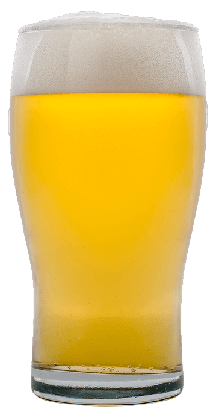

Blonde
IBU 18 | ABV 0,5% | SRM 4
Scottish
IBU 18 | ABV 6,0% | SRM 27

Porter
IBU 10 | ABV 10% | SRM 10

Maldita Honey
IBU 18 | ABV 6,0% | SRM 27
California
IBU 10 | ABV 9% | SRM 11

Resurrection Doble IPA
IBU 9 | ABV 10% | SRM 16

Fuck IPA
IBU 12 | ABV 15% | SRM 6
Gladstone Stout
IBU 7 | ABV 12% | SRM 11
(*)ESPECIFICACIONES
- IBU:
- International Bitterness Unit, es la forma de medir el grado de amargor aportado por el lúpulo.
- ABV:
- Alcohol By Volume, expresa el porcentaje de alcohol por volumen de cerveza.
- SRM:
- Standard Reference Method, es el método de referencia estandarizada para clasificar el color de la cerveza.